UDN
Search public documentation:
ContentBlogArchiveCH
English Translation
日本語訳
한국어
Interested in the Unreal Engine?
Visit the Unreal Technology site.
Looking for jobs and company info?
Check out the Epic games site.
Questions about support via UDN?
Contact the UDN Staff
日本語訳
한국어
Interested in the Unreal Engine?
Visit the Unreal Technology site.
Looking for jobs and company info?
Check out the Epic games site.
Questions about support via UDN?
Contact the UDN Staff
内容创建博客存档
Archived Posts...
2010 年 11 月
顶点颜色匹配工具
由 MattKuhlenschmidt 于2010/11/29 发表 到现在为止，如果您重新导入一个其实例化顶点颜色数量和顶点数量不同的静态网格物体，那么在地图检测及烘培过程中将会产生这样的错误： "StaticMeshActor_73 (LOD 0) 具有不再和原始静态网格物体相匹配的手动描画的顶点颜色" 。 这种类型的警告基本上会使您的顶点颜色不能呈现在游戏机平台上并且在PC上呈现出错误的效果。为了修正这个问题，我们向网格物体描画引入了新功能，当顶点颜色不能和静态网格物体相匹配时可以使用该功能修复顶点颜色。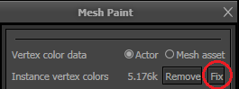
这个功能仅当网格物体需要修复时可用，否则它将隐藏起来。 该工具在大部分情况下都工作得很好，尤其是当您仅需要进行小量调整时。 对网格物体进行的修改越多，颜色越不可能匹配。该功能的设计目的是总是匹配某个颜色，即使改变非常大也要匹配。 我们选择不让这个工具进行自动化处理，因为那样如果您不喜欢那个结果就不能轻松地撤销修复了。 另外，给网格物体描画添加这个功能意味着您可以在应用修复后轻松地进行润色处理。 原始网格物体:
 应用了修复的低多边形网格物体:
应用了修复的低多边形网格物体: 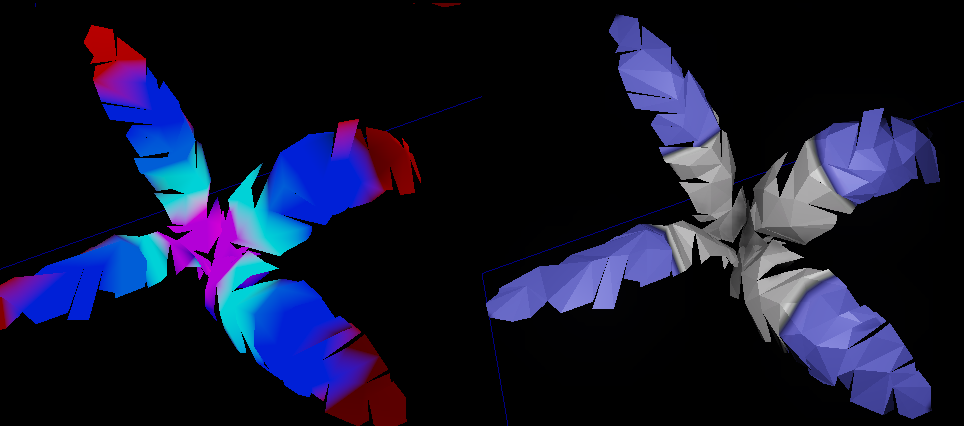
2010 年 10 月
光溢出改进
由 Martin Mittring于 2010/10/29 发表 了这个文档: 光溢出- 允许通过塑造光溢出特效的形状改进质量和灵活性。
- 当使用大半径时，相对于旧的方法来说性能有所改进。
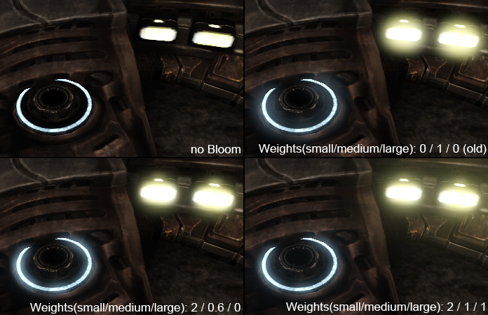
多个运动模糊方面的改进
由Martin Mittring于2010/10/28发表 了这个文档： 运动模糊 、运动模糊柔和边缘 、运动模糊植皮。- 使得应用了运动模糊对象的轮廓变得模糊需要一点额外的性能消耗 (修复了运动模糊对象仅模糊其本身内测部分的失真现象)。
- 暴露了用于运行时调整的控制台命令。
- 现在，植皮网格物体(由骨骼驱动动画的对象)的运动模糊可以任意地基于每个骨骼进行处理(PC和Xbox360)。
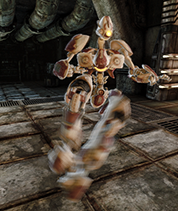
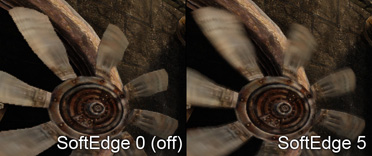
色调映射器改进
由Martin Mittring于2010/10/28发表 了这个文档： 颜色分级。- 提供了一些新的自定义的色调映射器，用于调整对比度，从而改进部分电影颜色映射器。. 这可以增量较暗图像的颜色。
2010年9月
批量修改贴图属性
由Jason Bestimt 于 2010/09/01 发表 如果您需要对贴图进行批量修改，那么现在您可以在内容浏览器中选中多个贴图，并右击选择"Properties(属性)..."即可。2010 年 8 月
毛发的一遍光照渲染
由Daniel Wright 于 2010/08/04 发表 到目前为止，UE3仅对半透明对象进行多边渲染。 在同一个网格物体上，多遍渲染的光照半透明细分为多个重叠的层，从而产生非常亮的效果:
8月份的QA版本将具有一遍光照渲染的方法，这将产生正确的渗透效果：
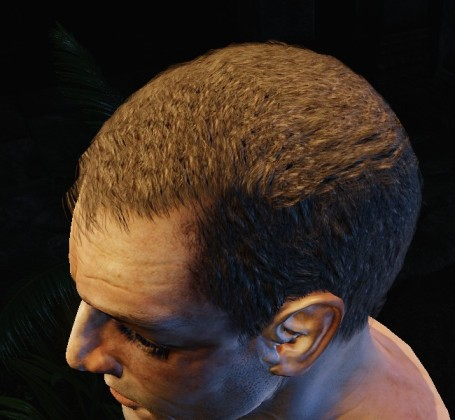
新的一遍光照渲染是SkeletalMeshCinematicActor所采用的默认方法，所以可以在编辑器中放一个SkeletalMeshCinematicActor来预览它的亮度。 必须在游戏性pawns的脚本中把bUseOnePassLightingOnTranslucency 设置为true才能使用一遍光照渲染。 为了一遍渲染光照， 将会使用一个单独的没有阴影的SH光源近似除了定向光源以外的光源(或者在过场动画中没有边界的光源)。 在大多数情况下，这样做是看不出区别的。 由于进行了近似处理，所以单遍渲染的技术使用的着色器指令的数量大约是多遍渲染光照的一半，所以毛发的性能消耗变得小了很多。
点光源的全景阴影
由 Daniel Wright 于 2010/08/04 发表 8月份的QA版本具有了点光源产生的整个场景的阴影的功能。 如果符合以下条件则会启用这个功能：- 光源是投射正常阴影的PointLightMovable。
- 光源是具有预计算阴影的任何光源(可切换光源或者正常的点光源)，还没有构建该光源的光照，且在编辑器中该光源处于选中状态。
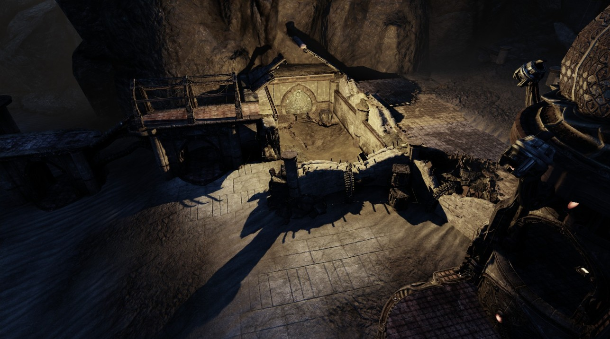
2010年7月
新的角色间接光照设置
由 Daniel Wright 于 2010/07/20 发表 向WorldInfo中添加了新的设置，提供了更多用于控制角色间接光照的设置：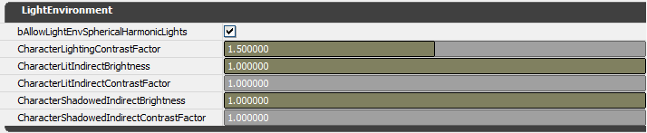
这些设置替换掉了旧的 LightEnvironmentIndirectContrastFactor，因为它们提供了更多的功能。 这些设置可以在运行时进行应用，以便您可以在编辑器中调整它们，不必重新构建光照就可以查看结果。 它们仅影响bIsCharacterLightEnvironment=true的光照环境，该项必须在虚幻脚本中进行设置。 SkeletalMeshCinematicActors默认启用了这项设置，所以您可以在关卡中到处放置它来进行预览。
这是个放在关卡中的SkeletalMeshCinematicActor，该关卡使用定向光源上具有较大IndirectLightingScale的Lightmass照亮，这将导致角色的背面接收很多间接光照，从而使得光照侧和阴影侧产生较小的对比差。
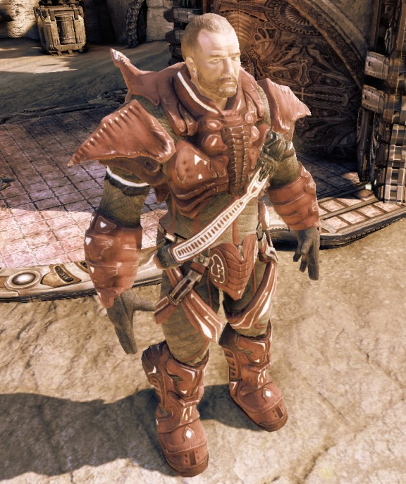
这是将CharacterLitIndirectBrightness=.01和CharacterLitIndirectContrastFactor=2的同样的场景：
细节光照编辑器视图模式
由 Daniel Wright 于 2010/07/20 发表 有一个新的编辑器视图模式Detail Lighting（细节光照），它替换了具有常量的漫反射颜色和高光颜色，但是保留了类似于法线贴图、不透明蒙板等材质参数。这个视图模式对于隔离不受漫反射材质颜色影响的光照是有用的。 旧的 'lighting only(纯光照)' 仍然是有用的，用于查找光照贴图失真。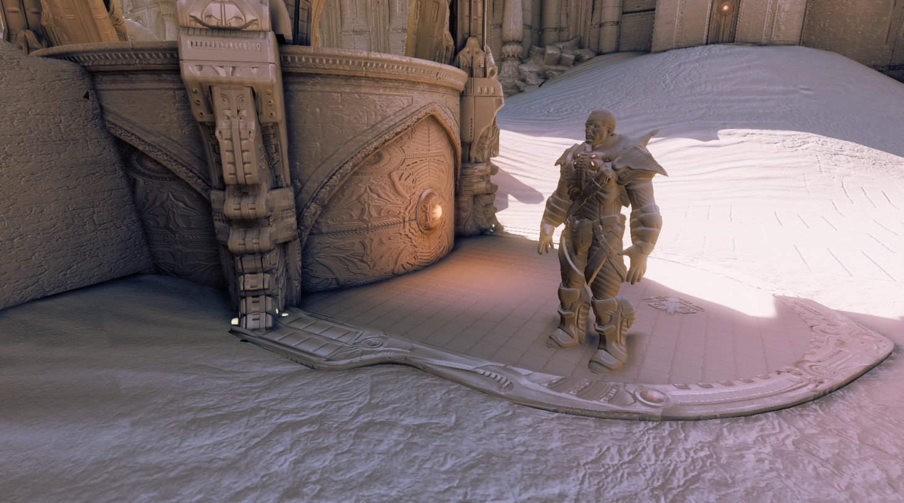
该新视图模式按钮在Lit(带光照)视图模式的旁边:

预计算可见性
由 Daniel Wright 于 2010/07/07 发表 下一个 QA 版本将支持预计算可见性功能。 文档在这里： 预计算可见性。Source Control(源码控制)恢复对话框
由Billy Bramer于 2010/07/06发表的内容。 现在，编辑器中提供了自定义恢复对话框，无论何时可以在内容浏览器中使用关联菜单选项来恢复文件。该对话框用于放置意外地恢复文件，同时清楚地指出了正在恢复的内容。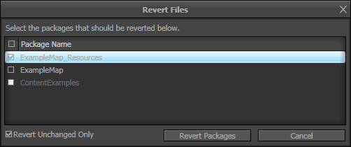
该对话框允许排序(通过点击列栏完成)、选中所有/全部不选、及仅恢复未修改的文件。(注意，该对话框使用”unchanged（未修改）“的Perforce定义，仅检测文件是否已经修改并随之保存。已经修改但没有保存的文件不包括在内。) 当选中仅恢复未修改的文件时，将禁止选择自Source Control中的版本开始发生改变的文件，正如上面的图片中的"ContentExamples"包所示。2010 年 6 月
骨架网格物体上的顶点颜色
由MattKuhlenschmidt发表于2010/06/23 现在，可以通过FBX或ActorX文件把骨架网格物体上的顶点颜色导入到UE3中。 您使用在材质编辑器中应用了Vertex Color节点的材质上的顶点颜色。
支持明确法线
由MattKuhlenschmidt发表于2010/06/23 现在，当把静态网格物体导入到编辑器中时可以使用明确的法线。 明确的法线使您可以在3d建模程序中定义您自己的法线，而不是通过UE3计算法线。 这对于在计算法线时会导致错误光照的非常复杂的网格物体是有用的。 您可以在导入静态网格物体时在导入对话框中选择想使用的明确的法线。
注意： 仅当从FBX文件中导入资源时支持该功能。
您可以在导入静态网格物体时在导入对话框中选择想使用的明确的法线。
注意： 仅当从FBX文件中导入资源时支持该功能。
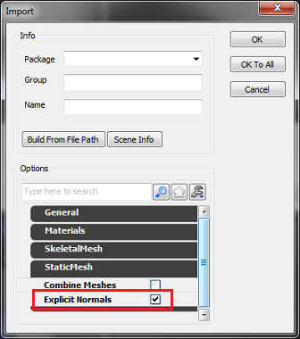
光溢出改进
由 Daniel Wright 于 2010/06/02 发表 下一个 QA 版本中将有几个用于控制光溢出外观的新设置： BloomScreenBlendThreshold- 场景颜色亮度必须比这个属性的值小才能接收光照溢出。
- 该行为类似于Photoshop的屏幕混合模式并且阻止给已经亮的区域添加光溢出而产生过饱和。
- 默认值是10，这可以有效地禁用该功能。 设置为1或者比1小的值将可以看到该效果。
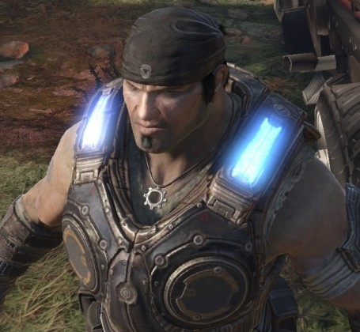
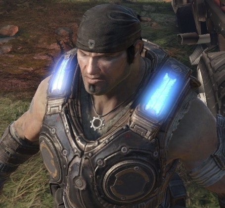
BloomTint(光溢出着色)- 用于和光溢出颜色相乘，默认为白色。
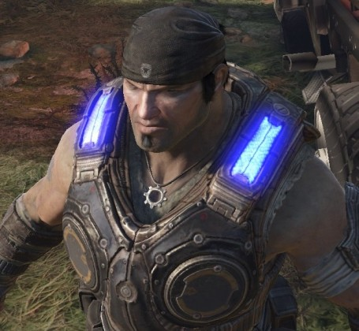
BloomThreshold- 像素颜色的任何分量必须大于这个值才能产生光溢出。 可以将该值设置的非常低，从而获得模糊的外观；或者可以将该值设置的较高，从而获得更加真实的外观(默认值是1)。
 同样， 现在可以把DOF_BlurBloomKernelSize设置为大于64的值 从使得光溢出在整个屏幕上进一步模糊处理的效果。 在渲染时较大值比较小值的性能消耗大。
同样， 现在可以把DOF_BlurBloomKernelSize设置为大于64的值 从使得光溢出在整个屏幕上进一步模糊处理的效果。 在渲染时较大值比较小值的性能消耗大。 内核尺寸为256：
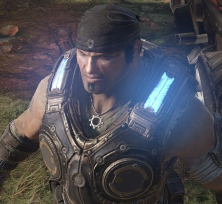
2010 年 5 月
半影缩放
由 Ryan Brucks于2010/05/28发表的内容。 虚幻引擎3中一个有用的功能是DistanceFieldPenumbraScale 属性。可以在材质或材质实例的Lightmass设置下找到该属性(在该图尾部高亮标出的部分)。这个设置可以修改主要定向光源所使用的距离域阴影。目前，您必须重新构建光照来查看变化，但是选中网格物体时您可以预览它们。
 * 当尝试删除使用了低分辨率光照贴图后看上去效果很差的资源上的阴影失真时这项是非常有用的。树木就是个是好的示例。当为了节约内存把一些SpeedTrees转换为静态网格物体时（SpeedTree仅是基于顶点照亮，这两费了很多内存），我们发现当使用默认设置时，由于带噪声的距离域阴影投射到低分辨率的光照贴图上从而导致网格物体光照贴图树木看上去非常糟糕。
* 当尝试删除使用了低分辨率光照贴图后看上去效果很差的资源上的阴影失真时这项是非常有用的。树木就是个是好的示例。当为了节约内存把一些SpeedTrees转换为静态网格物体时（SpeedTree仅是基于顶点照亮，这两费了很多内存），我们发现当使用默认设置时，由于带噪声的距离域阴影投射到低分辨率的光照贴图上从而导致网格物体光照贴图树木看上去非常糟糕。
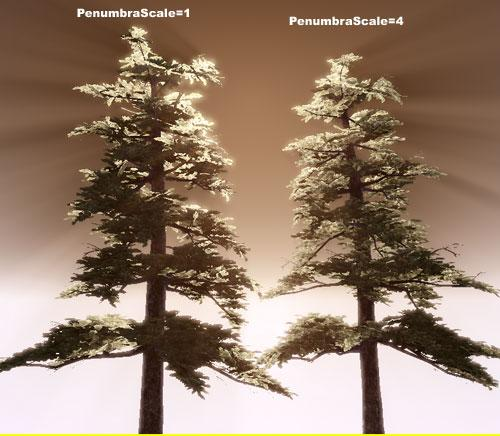
它们都是用 64x64的光照贴图分辨率。左侧使用的是默认值，您可以看到低分辨率光照贴图是导致阴影呈现噪声并且游戏中产生锯齿效果的。右侧设置DistanceFieldPenumbraScale 为 4 ，这使得模糊了阴影周围的所有粗糙边缘，这使得树木看上去更加柔和，模拟了光纤传输的外观。
最重要的是它没有性能消耗，可以帮助我们在某些情况下摆脱低分辨率光照贴图!
(另一个有用的情况是当场景中需要半透明光照对象并且在其阴影看上去是错误的时，如同fogsheet（雾薄片）一样)。
自动重新导入贴图
由 Jason Bestimt 于 2010/05/26 发表 现在，编辑器支持监听源贴图的改变并在检测到修改时自动导入该贴图的功能。 要启用这个功能：- 把目录添加到您的XXXX(GAME)EditorUserSettings.ini文件的“监听”列表中。 您可以使用绝对路径或相对路径 (相对于 UnrealEngine3\Binaries\Win64\)。
[FileListener] AdditionalFileListenerDirectories=..\..\..\SourceAssetDirectory\或：
[FileListener] AdditionalFileListenerDirectories=D:\Build\SourceAssetDirectory\
- 通过跳转到View（视图）->Preferences(参数设置)->Auto-Reimport Textures(自动重新导入贴图)来启用该功能。
[FileListener] AdditionalFileListenerDirectories=D:\Build\SourceAssetDirectory\ D:\SuperSecretArtStuff\
基于每个地图的后期处理链
由MattKuhlenschmidt发表于2010/05/24 现在，您可以在world info(世界信息)属性中指定基于每个地图的后期处理链，而不必在 BaseEngine.ini中指定全局链。 注意： 如果没有指定"World Post Process Chain(世界后期处理链)"，那么则使用INI文件中指定的默认处理链。
注意： 如果没有指定"World Post Process Chain(世界后期处理链)"，那么则使用INI文件中指定的默认处理链。
指数型高度雾
由 Daniel Wright 于 2010/05/20 发表 5 月份的 QA 版本有了一种新的全局高度雾类型，称为指数型高度雾。 您可以像放置正常的高度雾 actor（可以在 'Actor Classes' -> 'Info' 下找到）那样将指数型高度雾放置到关卡中，但是它们的渲染行为是不同的。 Exponential Height Fog 地图中较低的地方创建较大密度的雾，在较高的地方创建较低密度的雾。 雾的密度变化是平滑的，永远不会像现有的常量密度的高度雾那样出现明显的分界。 指数型高度雾也提供了两种雾颜色，一种颜色用于面向主要定向光源（如果不存在景则径直向上）的半球体，另一种颜色用于相反方向的半球体。 这里是具有现有常量密度高度雾的 VCTF-Necropolis：而现在指数级高度雾对面向光源的半球和背离光源的半球使用不同的颜色。

渲染消耗和两层具有常量密度的高度雾的消耗一样。
2010 年 4 月
FBX导入器更新
由 Mike Fricker于2010/04/29 发表的内容。 FBX导入期已经得到更新！ 新功能- 添加了对刚体动画的支持 (添加了针对此功能的导入选项)。
- 这使得您可以在Max中使得链接的对象产生动画而不是使得植皮的网格物体产生动画。
- 现在您可以重新从FBX文件中导入骨架网格物体。
- 这包括除了动画、材质或贴图之外的LODs和顶点变形。
- 具有用于覆盖导入的资源名称的新选项。
- 默认情况下启用了该功能，所以现在您需要为新资源指定确切的名称。
- 现在可以导入贴图(可以创建或不创建一个材质)。
- 已经大大地改进了FBX导入选项。
- 重新书写了每个导入选项的工具提示信息。
- 现在，在FBX导入会话期间保存并记忆了导入设置选项。
- 导入期通过查看 FBX文件来检测要导入的资源的类型。
- 修复了网格物体导入时的平滑组警告对话框的垃圾信息。
- 各种其他的问题修复和改进。
光束
由 Daniel Wright 于 2010/04/14 发表 在引擎中有一个新的功能成为 Light Shafts（光束，也称为太阳光等）。 这些功能可以通过选中定向光源上的 bRenderLightShaft 来启用：
效果如下所示：

这个效果有一个由BloomScale进行比例控制的添加分量，和一个由OcclusionMaskDarkness控制的变暗分量。 您可以通过设置OcclusionMaskDarkness为1来仅启用添加项，您也可以设置BloomScale为0来仅应用变暗项。如果BloomScale 为0并且OcclusionMaskDarkness 为1，那么将不会再渲染特效，从而不会产生任何渲染性能消耗。 所以您可以在matinee中是这些参数产生动画，并且仅针对关卡的某个部分或在过场动画期间启用这个功能。 在Xbox360上需要花费1.9ms的时间来渲染这个效果。作为参考，SSAO 大约花费2.5ms，所以它的性能消耗是比较低的。
依赖于深度的光晕
由Jason Bestimt于2010/04/14发表 (相关主题： 虚幻编辑器） 透视图现在可以支持依赖于深度的光环，使边框图视图更容易看清楚。* 这个功能默认为开启状态，并且可以使用主编辑器视口中的View(视图)->Preferences(参数设置)->Enable Wireframe Halos(启用线框光环)。
ProcBuilding文档
由James Golding于 2010/04/2 发表 在UDN上的这里提供了关于ProcBuilding 系统和Facade工具的文档。
2010年3月
处理优化法线
由 Kevin Johnstone于2010/03/26发表的内容。 通过模拟引擎所作处理，及分离您正常放在单独的平滑组上的或者依赖于斜边或使事物变得更加整洁的额外边循环的面，有很多不同的方法来处理更加整洁的法线以获得更加优化的多边形数量。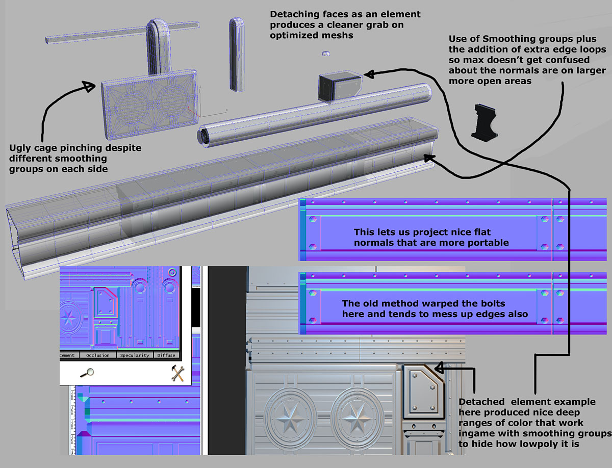
老方法的问题是它将弯曲或剪辑对象，影响设计，使得它具有较低的可移植性来影射为其他形状。资源合并
由Jason Bestimt于2010/03/23发表 资源合并工具提供了一种可以在编辑器中将多种资源合并为一个资源的简单方法。例如，试想一下，在开发过程中贴图经过多次复制，从而导致由于存储同一贴图的多个副本而浪费资源。资源整合工具允许用户根据需要选择所有类似应用，使它们指向一个特定的贴图实例。调用资源合并工具
要想获得该工具，您只需简单地在内容浏览器中选择您想合并的资源，包括您想将其合并到的资源。然后右击，在出现的关联菜单中选择“合并...”。注意，合并通常仅限于相同类型的对象，但某些贴图和材质除外。如果您没有看到“Consolidate(合并)...”选项，那么应该确保您只选择了同一类型的资源！  |
| 下面是一个复制很多次的贴图！ 全部选中 右击，获得‘合并...’选项。 |
合并资源
一旦您从选中对象的关联菜单中选择了"Consolidate(合并)..."，那么将弹出您选中的每个资源的单选按钮列表。从对话框中，选择其中一个想用作为"asset to consolidate to(要合并到的资源)"，然后按下 "Consolidate Assets(合并资源)"。所有没有在列表中选中的资源将会被替换为资源的引用，并且在此过程中删除未选中的资源。  |
| 在合并对话框中，选中一个资源，将它标记为 ‘要合并到的对象’。 |
 |
| 已经将所有这些副本合并到选择中的资源！ |
编码视频
由Nick Atamas于 2010/03/23 发表的内容。 一般需要创建视频来展示您的游戏或特定功能。 不幸的是，捕获的视频是非常大的。 幸运的是，几G的原始视频通常可以压缩到几百兆。 其中一个简单的压缩方法是使用Microsoft Expression Encoder的免费版本。 视频指南: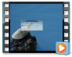
步骤:- 安装:
- 从以下页面的右侧点击“Download Free Version(下载免费版本)”: http://www.microsoft.com/expression/try-it/default.aspx?filter=encoder3
- 运行安装程序
- 运行Expression Encoder。把拖拽您捕获的视频并将其放到编码器中。
- 选择Output(输出) -> Job Output(任务输出)下的输出目录。
- 在Encode（编码） -> Video(视频)下选择质量。2048kbps是个很好的和数值。
- 确保 Frame Rate(帧频率) 和 Size Mode(尺寸模式) 都设置为 Source 。

- 按下Encode(编码) 并等待。
动态阴影半透明
由 Daniel Wright 于 2010/03/22 发表 现在，我们在两个非常特殊的情形中有动态的阴影半透明： 1) 由Light Environment (环境光照)照亮的半透明资源可以接收静态环境中的主要光源投射的动态阴影。 换句话说，现在环境可以给角色毛发投射阴影。 左侧的半透明毛发没有使用这个功能；右侧的毛发启用了该功能。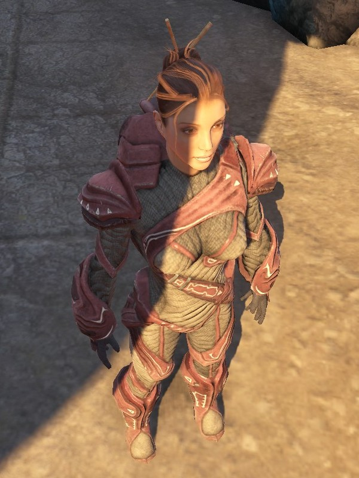
 启用该功能的材质设置是bTranslucencyReceiveDominantShadowsFromStatic。 还有个Light Environment(光照环境)设置用于控制毛发是否开启该性能消耗较小的阴影还是使用真正的动态阴影： bAllowDynamicShadowsOnTranslucency。 默认状态该功能为禁用状态，所以如果您想预览该功能，一定要启用该设置。
性能注意事项:
在Xbox360，每个启用该功能来渲染阴影深度的角色上的性能消耗是 .2ms。 它同时会添加4个贴图查找和一些ALU指令到毛发着色器中，这些一般进会添加小量的GPU时间(大约.02ms)，因为毛发在屏幕上时非常小的。
限制:
阴影仅处理静态环境投射，毛发不能从其他玩家接收阴影，也不能处理自身阴影投射。
2) 半透明对象可以继承不透明表面上投射的主要阴影。 这意味着半透明对象可以使用投射到半透明对象后面的不透明像素上的动态阴影。 这个功能的作用是允许地面上的网格物体的某种动态阴影通过使用半透明混合模式和深度偏移alpha来隐藏几何体缝隙。
这里是没有应用这个功能的地面上的半透明网格物体的外观：
启用该功能的材质设置是bTranslucencyReceiveDominantShadowsFromStatic。 还有个Light Environment(光照环境)设置用于控制毛发是否开启该性能消耗较小的阴影还是使用真正的动态阴影： bAllowDynamicShadowsOnTranslucency。 默认状态该功能为禁用状态，所以如果您想预览该功能，一定要启用该设置。
性能注意事项:
在Xbox360，每个启用该功能来渲染阴影深度的角色上的性能消耗是 .2ms。 它同时会添加4个贴图查找和一些ALU指令到毛发着色器中，这些一般进会添加小量的GPU时间(大约.02ms)，因为毛发在屏幕上时非常小的。
限制:
阴影仅处理静态环境投射，毛发不能从其他玩家接收阴影，也不能处理自身阴影投射。
2) 半透明对象可以继承不透明表面上投射的主要阴影。 这意味着半透明对象可以使用投射到半透明对象后面的不透明像素上的动态阴影。 这个功能的作用是允许地面上的网格物体的某种动态阴影通过使用半透明混合模式和深度偏移alpha来隐藏几何体缝隙。
这里是没有应用这个功能的地面上的半透明网格物体的外观：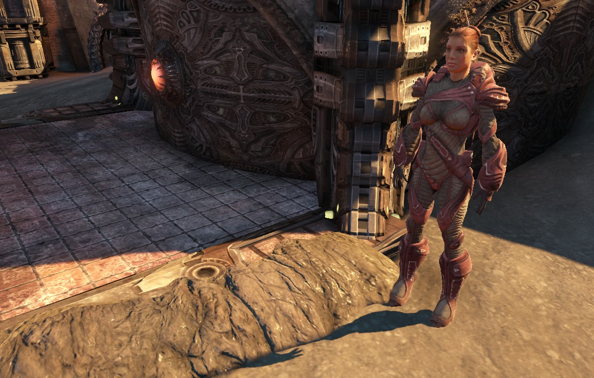
启用了该功能后的网格物体的外观: 启用该功能的材质设置是bTranslucencyInheritDominantShadowsFromOpaque。 注意启用这个功能会添加一些性能消耗，所以应该仅在地面网格物体上的基础材质中启用该功能，不要在关卡中放置的所有半透明材质中启用该功能。
性能注意事项:
在Xbox360上场景中的任何地方使用这个功能都会有.27ms的常量性能消耗，当半透明地面网格物体覆盖多个屏幕时向启用该功能的材质上添加一个贴图会另外消耗.1ms。
限制:
该功能仅对从主要 定向 光源投射的阴影有效，所以不会影响调制阴影(当完全在主要光源的阴影中时使用)。
甚至在定向光源上，这也只对动态对象中的每个对象阴影有效，而不是在级联型阴影地图上。
使用这个选项的半透明对象会从它后面的不透明物体上获取动态阴影，正如您在以下屏幕截图中所看到的楼梯。 如果半透明对象不能和它后面的不透明网格物体很好地匹配，那么将会产生失真。
启用该功能的材质设置是bTranslucencyInheritDominantShadowsFromOpaque。 注意启用这个功能会添加一些性能消耗，所以应该仅在地面网格物体上的基础材质中启用该功能，不要在关卡中放置的所有半透明材质中启用该功能。
性能注意事项:
在Xbox360上场景中的任何地方使用这个功能都会有.27ms的常量性能消耗，当半透明地面网格物体覆盖多个屏幕时向启用该功能的材质上添加一个贴图会另外消耗.1ms。
限制:
该功能仅对从主要 定向 光源投射的阴影有效，所以不会影响调制阴影(当完全在主要光源的阴影中时使用)。
甚至在定向光源上，这也只对动态对象中的每个对象阴影有效，而不是在级联型阴影地图上。
使用这个选项的半透明对象会从它后面的不透明物体上获取动态阴影，正如您在以下屏幕截图中所看到的楼梯。 如果半透明对象不能和它后面的不透明网格物体很好地匹配，那么将会产生失真。
对预览未构建的光照的修改
由 Daniel Wright 于 2010/03/18 发表 在过去，编辑器为带有未构建的光照的对象使用阴影体积，但是为了避免性能问题和 BSOD 问题，阴影仅在您距离对象非常近时才出现。在下一个 QA 版本中，在这些情况下将会使用投射阴影： 1) 仅有几个对象没有构建（当移动对象或改变对象的设置时发生），那么将从主要光源创建基于每个对象的阴影。 仅从主要光源创建这些阴影是因为可能会有很多光源正在影响某对象，创建多个基于每个对象的阴影很快就会使得编辑器无法工作。 2) 有很多未构建的对象或者没有构建光源（当移动或编辑光源时发生） - 将会为光源创建整个场景的阴影。 目前，这个功能仅对主要定向光源和任何类型的聚光源有效。 比如，这里是个具有主要定向光源的内置场景: 一旦您移动几个静态网格物体，那么就会为这些网格物体描画动态阴影，但是其他任何对象都仍然使用预计算阴影：
一旦您移动几个静态网格物体，那么就会为这些网格物体描画动态阴影，但是其他任何对象都仍然使用预计算阴影：
 如果您开始旋转光源，那么编辑器将切换到整个场景的动态阴影：
如果您开始旋转光源，那么编辑器将切换到整个场景的动态阴影：
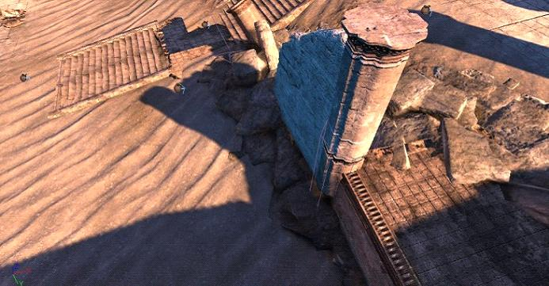
另外，现在有一个预览天空光源，它把Lightmass EnvironmentColor应用到任何具有未构建的光源的对象上，使得它们在阴影区域不再变黑。Cascaded Shadow Maps(层叠阴影贴图)和DominantDirectionalLightMovable
由 Daniel Wright 于 2010/03/18 发表 现在，在主要定向光源上支持 Cascaded Shadow Maps（层叠阴影贴图）。 这里是相关设置：- WholeSceneDynamicShadowRadius
- 决定了动态阴影淡出的距离。
- NumWholeSceneDynamicShadowCascades
- 决定了视锥被分���为多少部分，称为cascade（层叠）。每个层叠具有它自己的阴影贴图，所以增加层叠的数量会改进阴影分辨率，并且提供较大的视图范围，但渲染要花费较长的时间。
- CascadeDistributionExponent
- 较高的值将会使得层叠变换更接近于相机，如果只小于1，那么将会把使得变换远离相机。
-
WholeSceneDynamicShadowRadius= 10000 -
NumWholeSceneDynamicShadowCascades= 3 -
CascadeDistributionExponent= 3
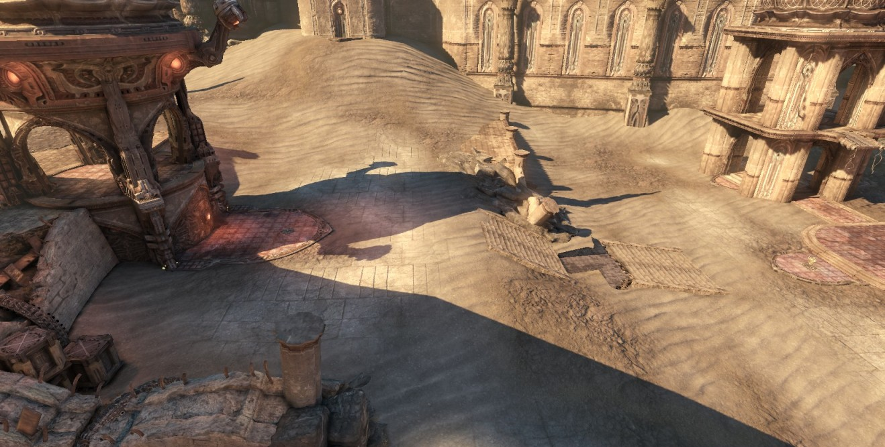
主要定向光源旋转到不同方向时的场景: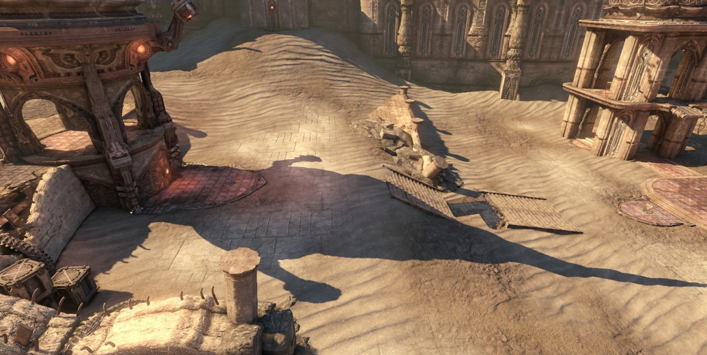
包列表过滤器
由Nick Atamas于 2010/03/18发表的内容。 现在，内容浏览器提供了几个帮助您跟踪您当前正在处理的包的工具。 除了文本过滤器，您可以显示已经 修改 的包和当前 迁出 的包。
拖放修改
由Nick Atamas于2010/03/17发表的内容。 修改的内容 过去，您可以在放置资源时通过按下各种修改器按键来改变自愿行为。 但现在，这些按键的行为合并到了一个单独的修改器按键中： Ctrl。 在从内容浏览器中拖放资源的过程中按下 Ctrl键将会弹出一个具有所有可用动作列表的关联菜单。 这些当做将会根据正在拖拽的资源和当前选中的actor而变化。 示例: ...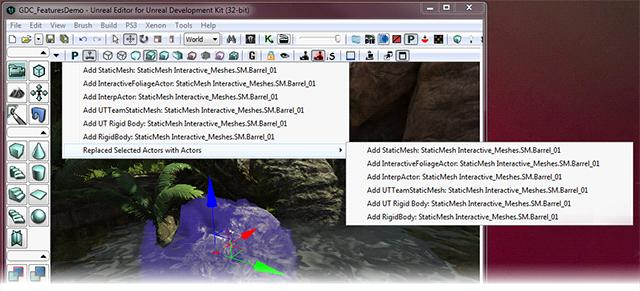
已知问题 当在内容浏览器中使用List View(列表视图)时，您不能在按下Ctrl同时开始拖放资源。 缩略图没有影响。 解决方案 ：- 选中所有资源项
- 开始拖拽选中项
- 按下Ctrl
- 放下选中项
材质编辑器节点预览
由Matt Kuhlenschmidt发表于2010/03/12 (相关主题： 虚幻编辑器） 现在您可以在材质编辑器中通过右击一个节点并选择 "Preview Node on Mesh(在网格物体上预览节点)"来预览单独的节点。 这将会把选中的节点的输出端设置为预览窗口中的网格物体。 对正在预览的节点的所有修改都可以在预览窗口中进行更新。 任何时候，您可以右击另一个节点来进行预览，或者您可以右击当前的预览节点来停止预览。 将会在当前正在预览的节点上出现一个可视化的指示。
属性窗口脚本定义的顺序
*由Jason Bestimt发布于 2010/03/12 * (相关主题： 虚幻编辑器） 属性窗口现在可以保持它们在脚本文件中的顺序。 以前，类别和属性可以按照字母排序或者按照它们在native代码(而不是脚本)中的顺序进行排列。 现在，您可以使用脚本设计人员定义的顺序！ 在多部分情况下，这将会使得把您频繁使用的 类别/属性 移动到顶部。 为了使得屏幕截图较小，以下图片显示了类别排序。 菜单: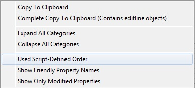
以前： 之后：
之后：
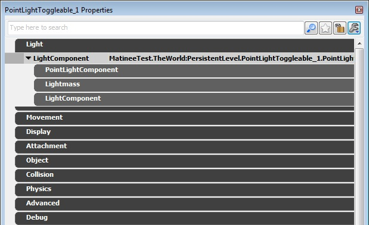
复制/粘帖 资源引用
由Nick Atamas于2010/03/03发表的内容。 内容浏览器的文本搜索支持完全符合要求的路径。您可以通过在内容浏览器中选中资源并按下Ctrl+C来复制资源引用。将该引用粘帖到搜索框中将会在内容浏览器中找到该资源。 注意： 您可以通过从编辑器中任何地方按下Ctrl+Shift+F来弹出内容浏览器并聚焦到搜索域上！
MipGenSettings
由Martin Mittring于2010/03/01发表了这个文档 向贴图中添加了一个新设置，可以使得mip更加明显从而产生更多的贴图细节。 更多细节信息： 贴图属性
更多细节信息： 贴图属性
SkeletalMeshCinematicActor
由 Daniel Wright 于 2010/03/01 发表 有一种半新类型的 actor 称为 SkeletalMeshCinematicActor，它用于在过场动画中以前使用 SkeletalMeshActor 的地方。 它实际上是个 SkeletalMeshActor，但是具有您需要为过场动画设置的所有设置项，比如光照环境上的 bSynthesizeSHLight=true 和 bUpdateSkelWhenNotRendered=true。 SkeletalMeshActorMAT 仍然是当您需要使用 AnimTree 而不是单独的 AnimNodeSequence 时所需要的重量级版本。2010 年 2 月
附加物编辑器
由James Golding于2010/02/16发表 在UnrealEd把Actors附加到一起是非常笨拙的，因为它涉及到锁定属性窗口等。现在，浏览器中有了一个新的选卡 Attachments(附加物) ，允许您查看及编辑选中的一组actor的附加连接图。 同时提供了一个新的案件快捷方式(Alt-B),它将会把选中的actors附加到一起。它总是会将第一个选中的actor附加到最后一个选中的actor上。
更多信息请参照附加物编辑器页面。
同时提供了一个新的案件快捷方式(Alt-B),它将会把选中的actors附加到一起。它总是会将第一个选中的actor附加到最后一个选中的actor上。
更多信息请参照附加物编辑器页面。
"Set VectorParam" 和"Get Location and Rotation"动作的新的Kismet功能
由Matt Kuhlenschmidt发表于2010/02/09 (相关主题： 虚幻编辑器） Set Vector Param(设置向量参数) - 现在，您可以通过暴露为"VectorValue"的变量链接把一个Kismet向量对象连接一个动作上。 以前您必须手动地在属性窗口中设置这些值，但是现在它不允许您从一个动作中获得位置并在这个动作的材质实例中设置它。 Get Location and Rotation(获得位置和旋转值) - 我添加了一个功能，使得如果Target(目标)是具有骨架网格物体的Pawn，那么则可以从插槽或骨骼中获得世界位置和坐标。 您设置的属性称为"SocketOrBoneName"，正如您在这部分的属性窗口图片中所看到的(这个示例没有提供名称)...
Get Location and Rotation(获得位置和旋转值) - 我添加了一个功能，使得如果Target(目标)是具有骨架网格物体的Pawn，那么则可以从插槽或骨骼中获得世界位置和坐标。 您设置的属性称为"SocketOrBoneName"，正如您在这部分的属性窗口图片中所看到的(这个示例没有提供名称)...
 如果您在这个域中提供一个名称，那么代码将尝试找到具有那个名称的插槽。 如果查找插槽失败，那么它将尝试查找具有那个名称的骨骼。 如果您没有提供名称，或者这两次查找都失败了，或者目标不是具有骨架网格物体的pawn，那么该动作将执行它以前所做的处理，即设置Target本身的位置和旋转值。
如果您在这个域中提供一个名称，那么代码将尝试找到具有那个名称的插槽。 如果查找插槽失败，那么它将尝试查找具有那个名称的骨骼。 如果您没有提供名称，或者这两次查找都失败了，或者目标不是具有骨架网格物体的pawn，那么该动作将执行它以前所做的处理，即设置Target本身的位置和旋转值。
属性窗口收藏夹
由Jason Bestimt发布于 2010/02/04 (相关主题： 虚幻编辑器） 现在属性窗口支持收藏夹！ 要想起用它们，仅需要点击工具条上的新的星形按钮即可。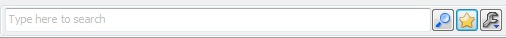
当启用收藏夹时，仅需点击属性旁边的空心星形就可以把该属性添加到顶部的收藏夹窗口。 如果点击实心星形（在任何部分），您将会把那个属性从收藏夹中删除。
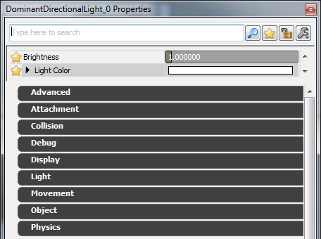
2010年1月
状态栏通知
由Jason Bestimt于 2010/01/28 发表 (相关主题： 虚幻编辑器） 状态栏上有两个按钮，用于反映Source Control连接的状态和加载的关卡的光照状态。 这些按钮将分别地尝试重新连接到Source Control或重新构建光照。
新的颜色选择器
由Jason Bestimt于2010/01/19 发表 (相关主题： 虚幻编辑器） 现在，UE3支持具有以下功能的新颜色选择器：- 实时更新。 当您释放鼠标时，您已经选中的颜色将会自动地提交并重新描画适当的视口，这个过程中不会关闭窗口。 现在的当您选择颜色时光照颜色、材质参数等将会更新。
- 非模态的。 开始编辑点光源颜色，然后移动光源，不必关闭窗口。 *颜色不活。 使用颜色不活按钮，现在您可以从屏幕的任何地方选择颜色，包括外部应用程序。
- Alpha和No Alpha预览。 为了方便使用，我们提供了两个‘真实的’颜色预览：具有alpha的颜色预览和不透明颜色预览
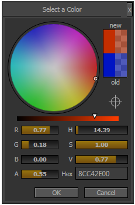
稍后提供的功能：- 全HDR颜色。
- 样本。
2009年12月
拖放Matinee连接器(2009年12月17日)
由 Mike Fricker于 2009/12/17 发表的内容。 虚幻编辑器） 现在您可以通过按下Ctrl然后将连接器拖放到新的位置来轻松地重新排Matinee连接器。 连接器的排列将会随同保存到序列中。 请查看这个视频文件获得示例！
请查看这个视频文件获得示例！
最新的动画文档! (12/8/2009)
由Matt Kuhlenschmidt发表于2009/12/7 (相关主题： 虚幻编辑器） 更新了以下动画文档。查看它们！ 动画概述 导入动画指南 使用骨架控制器 根骨骼运动 动画节点 AnimSet编辑器用户指南AnimSet查看器 - 顶点变形目标关键信息! (12/7/2009)
由Lina Halper于 2009/12/7 发表 (相关主题： 虚幻编辑器） 现在，您可以在 AnimSet Viewer中通过使用Show Morph Keys可以查看Morph Target Keys(顶点变形关键信息)。同时您可以从AnimSet中删除顶点变形关键帧。 请查看最新的AnimSet编辑器指南 - https://udn.epicgames.com/Three/AnimSetEditorUserGuide。2009 年 11 月
新的视频指南! (11/30/2009)
由Richard Nalezynski?于 2009/11/30发表的该内容 虚幻编辑器） Epic 开发人员和3D Buzz正在努力为UDN制作一个全新视频系列！ 请查看视频指南页面上的当前列表。新的几何体模式贴图 (2009/11/30)
由 Warren Marshall 于 2009/11/30 发表 (相关主题： 虚幻编辑器） 上周经过Jordan的协助下，我们构成了一个新的用于几何体模式编辑的材料。 它当前的工作方式是当您选择一个多边形，它将透过任何东西显示该多边形，并且很难分辨它在哪里和世界相交。 使用这个新的材质，如果多边形在某物的后面，那么它将描画为教案的颜色。 这将使得在世界中将体积和BSP对齐变得更加容易。 图片总是最好的解释方式，如下所示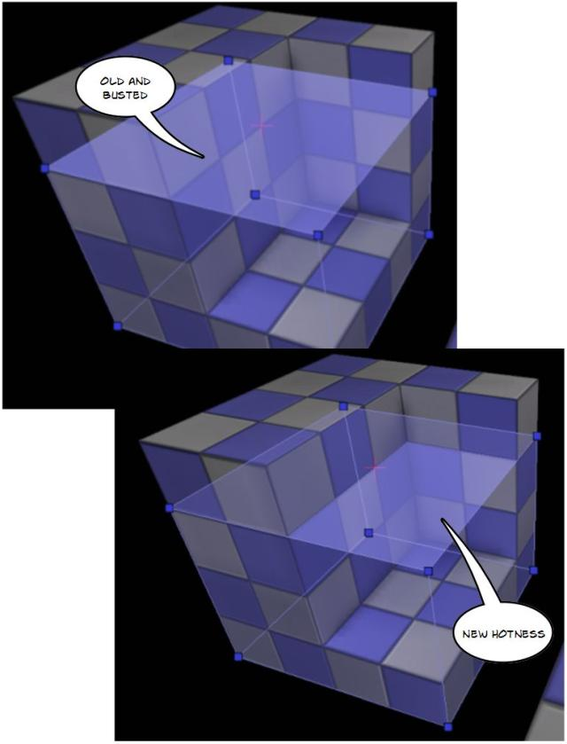
新的编辑器功能 (2009/11)
由 Mike Fricker于 2009/11/24 发表的内容。 （相关主题： 虚幻编辑器） 这里是添加到虚幻编辑器中的最新功能的快速概述。 隐藏永久性关卡Actors 最终您可以通过关卡管理器中的新按钮来 隐藏/显示 所有 P 地图actor。 同时，隐藏和显示actor不再把您的关卡标记为需要保存状态! Kismet History Navigation(Kismet历史导航)
和网站浏览器类似，现在Kismet具有了 Back/Forward（后退/前进）按钮，使您可以跳转到脚本中的前一个序列和位置！ 您甚至可以使用您的鼠标上的 back/forward（后退/前进）按钮。
Kismet History Navigation(Kismet历史导航)
和网站浏览器类似，现在Kismet具有了 Back/Forward（后退/前进）按钮，使您可以跳转到脚本中的前一个序列和位置！ 您甚至可以使用您的鼠标上的 back/forward（后退/前进）按钮。

 Hide/Show at Editor Startup(在编辑器启动时 隐藏/显示)
有一些新的选项用于设置actor在编辑器”启动时隐藏“。 因此，现在actor的一般隐藏和现实总是个”临时“动作。(也就是，它不必在把关卡包标记为已修改状态！)
Hide/Show at Editor Startup(在编辑器启动时 隐藏/显示)
有一些新的选项用于设置actor在编辑器”启动时隐藏“。 因此，现在actor的一般隐藏和现实总是个”临时“动作。(也就是，它不必在把关卡包标记为已修改状态！)
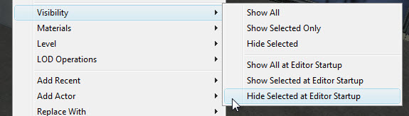
Texture Info Display(贴图信息显示) 向贴图编辑器中添加了新的”Texture Info（贴图信息）“面板，以便您可以看到贴图的原始分辨率、显示分辨率和有效分辨率。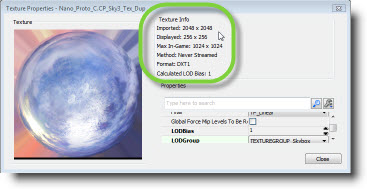
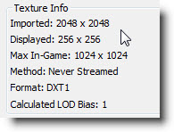
Box Select Encapsulation Setting(边框选择包含设置) 正交视口中的边框区域选择现在有一个用于设置边框是否需要完全包含某个对象才将对象设为选中状态的选项。 您可以使用新的工具条按钮切换这个设置。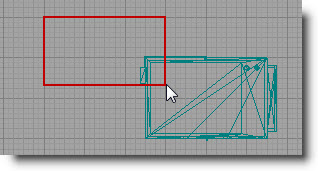
 PIE Only Visible Levels(仅在PIE中加载可见关卡)
有一个新的工具条按钮，它限制加载到PIE中的关卡仅为当前可见的关卡。 如果您在处理较大的关卡但是测试时不需要加在全部东西，那么这项是有用的。
PIE Only Visible Levels(仅在PIE中加载可见关卡)
有一个新的工具条按钮，它限制加载到PIE中的关卡仅为当前可见的关卡。 如果您在处理较大的关卡但是测试时不需要加在全部东西，那么这项是有用的。

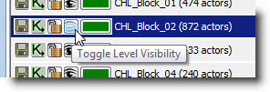
Improved Convert Light(改进的转换光源工具) “Convert Light(转换光源)”工具得到了很大的改进，现在可以在任何光源类型之间进行转换！ 仅需选中一个光源，然后右击它弹出这个菜单选项即可。 Pre-wired Kismet Nodes(预先连好的Kismet节点)
我们添加了一个小功能，使得当鼠标悬停到一个端口上时可以使用快捷键创建一个Kismet节点时他会自动连接该节点。 比如，把鼠标移动到Out端口，按下D键并点击鼠标按钮来创建一个预先连接到Out端口的Delay节点。
Pre-wired Kismet Nodes(预先连好的Kismet节点)
我们添加了一个小功能，使得当鼠标悬停到一个端口上时可以使用快捷键创建一个Kismet节点时他会自动连接该节点。 比如，把鼠标移动到Out端口，按下D键并点击鼠标按钮来创建一个预先连接到Out端口的Delay节点。
 Level Manager Save Warning(关卡管理器保存警告)
现在，需要保存的关卡会通过红色的高亮显示和命令的Save（保存）图标明显地作出指示。
Level Manager Save Warning(关卡管理器保存警告)
现在，需要保存的关卡会通过红色的高亮显示和命令的Save（保存）图标明显地作出指示。
 Show Hidden Levels Before Build(在构建前显示隐藏的关卡)
在构建关卡之前出现的提示上有一个新的”Make All Visible(使得一切可见)“按钮。
Show Hidden Levels Before Build(在构建前显示隐藏的关卡)
在构建关卡之前出现的提示上有一个新的”Make All Visible(使得一切可见)“按钮。
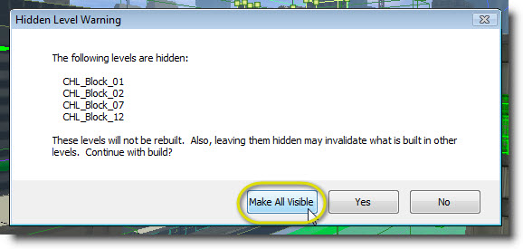
拍摄较好的贴图照片
由Jordan Walker于2009/11/21发表 (相关主题： 虚幻编辑器） 本文介绍了简单并快速地拍摄用作为贴图引用的照片的方法，该方法删除了大部分高光和定向光照。拍摄较好的贴图照片.世界位置偏移（也称为顶点变形）
由Daniel Wright于 2009/10/29 发表 (相关主题: 虚幻编辑器） ＵＤＮ上已经提供了关于新的世界坐标偏移功能的文档： 世界位置偏移。2009 年 10 月
光照构建信息对话框
由Scott Sherman于2009/10/20发表 (相关主题： 虚幻编辑器） 扩展了'Lighting Timings'对话框，以提供更多的信息来帮助您有话关卡中的静态光照。关于完整信息，请参照Lightmass光照构建信息。新的视图模式
由Scott Sherman于2009/10/20发表 (相关主题： 虚幻编辑器） 添加了两个新的视图模式，以辅助优化关卡中的静态光照。这些模式可以用于解释编辑��中恰好可见的光照贴图的贴图像素密度。Lightmap Density(光照贴图密度)视图也提供了颜色编码对象，以便容易地跟踪贴图像素浓密的对象。 关于这些模式的更多信息可在这里找到：视口平移改变
由Jason Bestimt发布于 2009/10/12 （相关主题： 虚幻编辑器） 正交视口和2d链接对象视口的默认平移系统已经改变。 现在点击并拖拽将会移动画布而不是相机。 同时，这些视口中的默认缩放现在以鼠标为中心，而不是以视口的中间处为中心。 如果您倾向于前面的平移或缩放方法，那么在主要编辑器工具栏中跳转到 View（视图）->Preferences(参数设置)，您就看到底部的两个平移和缩放控制选项。网格物体描画工具
由 Mike Fricker于2009/10/12发表的内容。 (相关主题： 虚幻编辑器） 在2009年8月的经过QA验证的版本中，我们引入了一个新的功能，它允许美工人员和关卡设计人员直接在关卡视口中向静态网格物体上描画顶点颜色。 您可以在原始的源网格物体上编辑颜色或者您可以在关卡中向网格物体的单独的表面上描画颜色。 您可以在材质上任意地应用颜色数据，并且每个实例颜色流允许您轻松地在地图中创建网格物体的可见变种。 请查看这个文档： https://udn.epicgames.com/Three/MeshPaintReference。 作为附带好处，顶点颜色数据细分为它自己的数据流，所以没有使用顶点颜色的网格物体资源不再为此浪费额外的内存(每个顶点4个字节)。着色器复杂度改进
由Daniel Wright于 2009/10/01 发表 (相关主题: 虚幻编辑器） Shader Complexity(着色器复杂度)[[ViewModes][View Mode][视图模式]]基于每个像素所需要的像素着色器指令的数量来对场景进行着色。 绿色是理想的，意味着它使用的指令数接近于0，完全饱和的红色处的性能消耗很大，意味着它要使用300多个指令。 在2009年11月的经过QA验证的版本中，Shader Complexity（着色器复杂度）视图模式有了一些改进。 第一个改进是视图模式在使用指令达到300个时不再显示饱和的红色，现在会在600个指令处显示粉色，900个指令出现时白色。 红色意味着性能消耗非常大，所以您可以把这些新的着色器想象得更加严重。 第二改进是现在可以精确地展现蒙板材质。 最终图像中的像素剔除掉它们后面的像素，这些像素的性能消耗和不透明像素类似。 那些由于不透明蒙版低于剪辑值而被销毁的像素是浪费的，它们是像不透明对象那样积累的。自定义缩略图
由Jason Bestimt发布于 2009/10/01 （相关主题： 虚幻编辑器） 那些不知道如何将它们本身渲染到缩略图上的资源现在以如图所示的方式渲染： 为了改进流程，现在您可以在关卡编辑器中从视口中给这些资源赋予一个自定义缩略图。 只需要在编辑器中选中一个视口(它的周围将会有黄色高亮显示的线框)，在内容浏览器中右击该资源，并选择”Capture Thumbnail from Active Viewport(从激活的视口中捕获缩略图)“。
为了改进流程，现在您可以在关卡编辑器中从视口中给这些资源赋予一个自定义缩略图。 只需要在编辑器中选中一个视口(它的周围将会有黄色高亮显示的线框)，在内容浏览器中右击该资源，并选择”Capture Thumbnail from Active Viewport(从激活的视口中捕获缩略图)“。

新的"支点"控制
由 Warren Marshall 于2009/10/01 发表 （相关主题： UnrealEd、[StaticMeshTopics][静态网格物体]]) 关卡设计人员日常需要处理的其中一个事情就是没有在方便的插槽中设置支点的静态网格物体。现在， Pivot(支点) 的右击菜单中有一些新的选项帮助我们解决这个问题。 这里主要有3点:- 您仍然可以像以前那样移动支点 - 使用右击菜单或者使用 ALT+鼠标中间键 。这样做将总是进行临时的移动，当您取消选中actor时支点将会复位。 当您按下 SHIFT 键来为画刷保存这个支点时没有任何更多的幕后技巧(关于保存的更多信息如下所示)。
- 如果您想为选中的actor永久地保存那个支点，那么右击它们，跳转到 Pivot(支点) 菜单，然后点击 Save Pivot to PrePivot(保存支点到先前支点) 选项。 这会把当前的支点位置烘焙到所有选中的actor的PrePivot（先前支点）中。 这允许您修复静态网格物体上的坏支点，即时在复制该网格物体时该修复也仍然存在。
- 如果您决定想返回到某些actor的原始支点，那么右击它们，跳转到 Pivot(支点) 菜单，点击 Reset PrePivot(重置以前的支点) 选项。 这将会清除选中的actor的PrePivot（先前的支点）但仍然会保证它们位于世界中的相同位置。
2009年9月
默认设置中的改变
由Daniel Wright 于 2009/09/25 发表 （相关主题: 内容创建) 我们针对无效率的默认设置进行了内部讨论。 这里是概述:- InterpActor、KActor、SkeletalMeshActor和SkeletalMeshActorMAT现在都默认使用光照环境。
- SkeletalMeshActor在游戏中变得更加高效，但不再适合用于过场动画中。在过场动画中请使用新的SkeletalMeshCinematicActor。 将扩展编辑器的 Replace Actor(替换Actor) 功能，以便可以把现有的过场动画更新为使用SkeletalMeshCinematicActors。
- 除了主要光源之外的所有光照组件已经从 LightShadow_Normal 修改为 LightShadow_Modulate 。
- 如果通过SetShadowParent()精确地设置了自动的阴影父项，那么将不会覆盖 PrimitiveComponent ShadowParent。
- 光照环境修改
- 增加的InvisibleUpdateTime(不可见更新时间)从4变为5。
- 增加的MinTimeBetweenFullUpdates(最小完整更新间隔时间)从.7变为1。
- ModShadowFadeoutTime=.75,以便当mod阴影不可见时会淡出。
- 如果bUsePrecomputedShadows=true那么将禁用光照环境。
- SetLightEnvironment()现在使用LDE重新附加所有组件，不仅附加同一个拥有者上的组件。
- DynamicSMActor及其子类(KActor、InterpActor等)。
- 默认启用Light Environment(光照环境) 。
- bShadowParented=true，以便当资源附加到父项时总是自动地向父项投射阴影。
- SkeletalMeshActor
- 默认启用Light Environment(光照环境) 。
- 默认禁用了bSynthesizeSHLight，将会使用天空光源作为次要光源。
- 针对游戏的角色和其它的重要的骨架网格物体将需要设置 bSynthesizeSHLight=true。
- SkeletalMeshComponent
- bCullModulatedShadowOnBackfaces=FALSE，因为这所产生的失真是很难看到的，并且默认对性能消耗没有影响。
- bAcceptsStaticDecals=FALSE
- bAcceptsDynamicDecals=FALSE, 因为骨架网格物体decal重新渲染整个网格物体。
- 添加了SkeletalMeshCinematicActor,它旨在替换过场动画中的SkeletalMeshActor。
- 现在SkeletalMeshActorMAT继承于SkeletalMeshCinematicActor。
- 保存SkeletalMeshComponent 上改变的所有设置 (MinDistFactorForKinematicUpdate=0等)。
- 启用SH光源。
- ParticleSystemComponent
- SecondsBeforeInactive=1.0
高级的网格物体放置
由 Warren Marshall于2009/09/22发表 (相关主题： UnrealEd、[StaticMeshTopics][静态网格物体]]) 在2009年11月的经过QA验证的版本中，在放置网格物体方面进行了一些流程改进。 最初，使用 S + 点击 来正常地放置网格物体；现在 ALT + S + 点击 来放置网格物体使它和当前选中的任何表面对齐。
 请参照 静态网格物体模式页面了解更多信息。
请参照 静态网格物体模式页面了解更多信息。
内容浏览器中的光源Actor
由Jordan Walker于2009/09/22发表 (相关主题： 关卡编辑) 我刚在引擎关卡上添加了一个包Engine_Lights。 它包含了所有光源类型的原型和几个具有预置的衰减和亮度值的不同尺寸的 暖色/冷色 光源 的模板。 这将会使得照亮关卡变得更加容易，因为您可以使用内容浏览器把光源拖拽到您的关卡中。 最后，我们将为这些使得放置光源变得更加容易的原型添加缩略图。 这些功能在2009年11月的经过QA验证的版本中可以获得。基本的半透明图元原型
由 Ryan Brucks于 2009/09/21 发表的内容。 (相关主题: 关卡编辑) 在EngineVolumetrics包中包含了大部分基本半透明图元的原型。 它们具有正确的 碰撞/光照 标志设置，所以您可以轻松地把它们放到关卡中。- Falloffsphere
- EngineVolumetrics.FalloffSphere.Mesh (A_EV_Folloffsphere_01)
- Fogsheet
- EngineVolumetrics.Fogsheet.Mesh (A_EV_Fogsheet_01)
- Lightbeam
- EngineVolumetrics.Lightbeam.Mesh (A_EV_Lightbeam_01, A_EV_Lightbeam_02, A_EV_Lightbeam_03)
实例化光源流程
由Jordan Walker于2009/09/18发表 (相关主题： 关卡编辑) 这个图片描述了实例化光源的流程...
编辑器性能
由Daniel Wright和 Phil Cole于 2009/09/18发表 (相关主题: 虚幻编辑器） 编辑器在大关卡中运行是非常慢的，尤其是在屏幕上有很多Actors的时候。这里使一些用于该百年编辑器帧频率的可以调整的设置... 对于单玩家关卡，一个单独的最好选项是 Level Streaming Volume Previs(关卡动态载入体积优先) 。 它将近显示您周围的几个动态载入关卡，当动态载入新的关卡时会有很大的加载延迟。有时候，您需要使得所有的关卡都可见，那么这便是以下这些选项好用的地方。- Distance to far clipping plane(到远剪切平面的距离)
- 很容易理解，一个有用的快速修复。它是 Redo(恢复) 按钮旁边的滑条。
- Turn off realtime update(关闭实时更新)
- 从字面上就很容易理解。
- G mode(G模式)
- 隐藏所有的编辑器调试信息。结果可能会变化。
- Have lighting built(构建光源)
- 该功能并不会总是有效，但是没有构建的光源会使得编辑器运行较慢。
- Unlit movement(不带光照的运动)
- 从字面上就很容易理解。
- Unlit view mode(不带光照的视图模式)
- 当没有构建光照时这是有帮助的。
- Show dynamicshadows(显示动态阴影)
- 当没有构建光照时这是有帮助的。
- Show selection(显示选中项)
- 这个显示标志默认为打开状态，使得可以可视化选中的BSP。当您不需要看到BSP选中项时，那么关闭该项会使得编辑器稍微快点。
- Show scene captures(显示场景截图)
- 关闭该项，会使得使用它们的场景适当地加速。